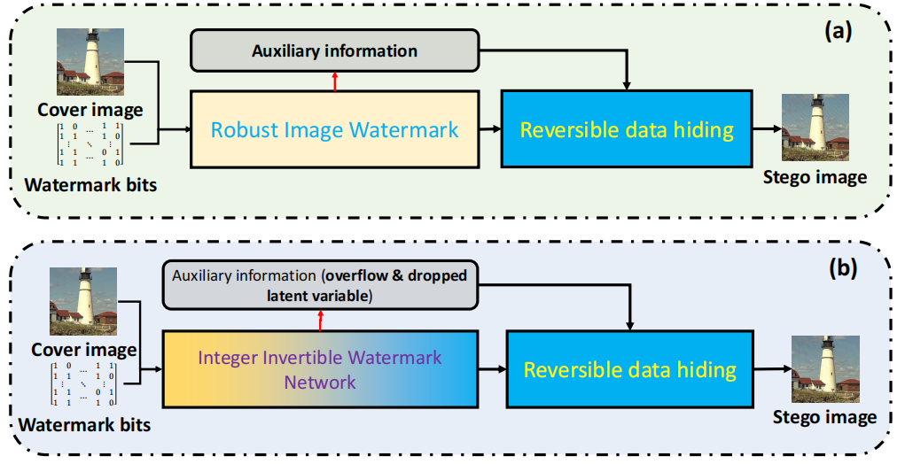
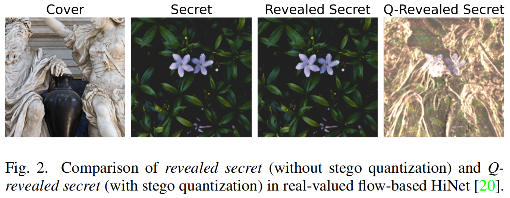
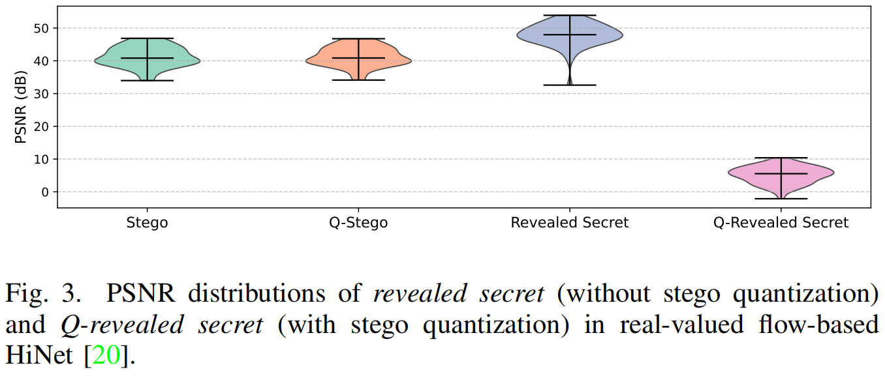
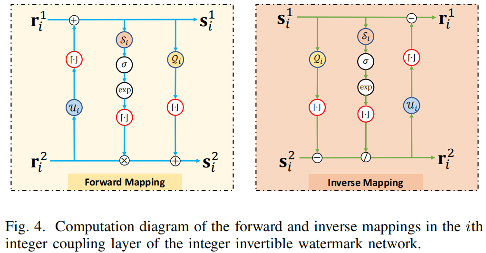
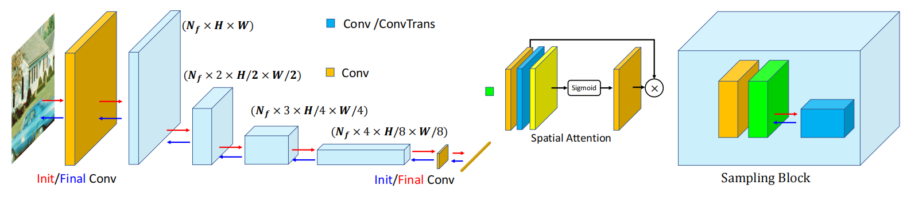
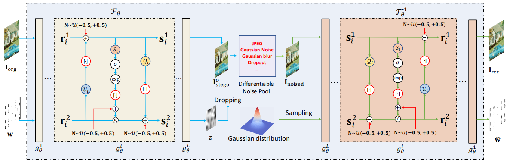

Deep_Robust_Reversible_Watermarking
Deep Robust Reversible Watermarking
Jiale Chen, Wei Wang, Chongyang Shi, Li Dong, Yuanman Li, Xiping Hu
摘要
鲁棒可逆水印技术（RRW，Robust Reversible Watermarking）能够在无损信道中完美恢复封面图像和水印，同时确保在有损信道下仍能稳健提取水印。然而，现有 RRW 方法大多基于非深度学习，存在设计复杂、计算成本高、鲁棒性差等问题，限制了其实际应用。为解决这些问题，本文提出深度鲁棒可逆水印（DRRW，Deep Robust Reversible Watermarking），一种基于深度学习的 RRW 方案。 DRRW 引入整数可逆水印网络（iIWN，Integer Invertible Watermark Network），通过实现整数数据分布间的可逆映射，从根本上突破了传统 RRW 方法的局限。与传统 RRW 方法需要针对不同失真进行任务特定设计不同， DRRW 采用编码器-噪声层-解码器框架，通过端到端训练实现对多种失真的自适应鲁棒性。在推理阶段，封面图像和水印被映射到溢出的隐写图像和潜在变量中。算术编码高效压缩这些数据生成紧凑的比特流，通过可逆数据隐藏技术嵌入，确保图像和水印的无损恢复。为减少像素溢出，我们引入溢出惩罚损失，显著缩短辅助比特流长度，同时提升鲁棒性和隐写图像质量。此外，我们提出了一种自适应权重调整策略，无需手动预设水印损失权重，从而确保训练稳定性和性能提升。多数据集实验表明， DRRW 实现了显著的性能优势。与最先进的 RRW 方法相比， DRRW 在鲁棒性方面提升55.14倍，在嵌入、提取和恢复复杂度方面分别降低5.95倍和3.57倍。辅助比特流缩短43.86倍，可逆嵌入在Pascal VOC 2012数据集的16,762张图像中成功应用，标志着向实用 RRW 应用迈出了重要一步。值得注意的是， DRRW 在严格保持可逆性的同时，实现了优于现有不可逆鲁棒水印方法的鲁棒性和视觉质量。
1.引言
随着数字内容和互联网技术的快速发展，知识产权保护与数据安全已成为亟待解决的紧迫问题。数字水印技术作为关键解决方案应运而生，通过将可识别标记直接嵌入多媒体内容，实现了所有权验证、内容完整性认证以及数字媒体的安全分发[1][2]。其中，鲁棒可逆水印（RRW）因其在保持抗失真能力的同时确保原始图像和水印位元无损恢复的独特优势而备受关注。这种双重功能使得
RRW
在数据完整性验证、版权确认等高风险应用场景中不可或缺，例如安全内容传输、数字媒体存储，以及需要绝对保真度的医疗图像处理等场景[3]
[4]。
传统 RRW 方法主要分为两大方向：基于直方图移位的 RRW
[5]-[11]和基于两阶段嵌入的 RRW
[12]-[16]，其中两阶段嵌入策略最具代表性。该方法首先通过鲁棒水印技术将水印位元嵌入原始图像，随后利用可逆数据隐藏技术将恢复原始图像所需的辅助信息隐藏到隐写图像中，如图1(a)所示。尽管这些方法在稳健性与可逆性之间达到了某种平衡，但它们通常涉及复杂的设计，并导致嵌入时间增加，从而限制了其实用性。

图1.传统 RRW 与所提 DRRW 的对比。
> (a)传统方法采用常规鲁棒图像水印技术嵌入鲁棒水印；
> (b)所提 DRRW 采用整数可逆水印网络嵌入鲁棒水印。
近年来，可逆神经网络（INNs）在数字水印[18] [19]和隐写术[20]-[25]等领域备受关注。这类网络通过可逆函数实现图像与水印的映射转换，特别适合用于隐写和水印任务。其核心优势在于既能嵌入水印，又能保持原始图像的高不可见性，这对版权保护和安全数据传输等应用场景至关重要。尽管存在这些优势，当前大多数基于INN的图像数据隐藏方法仍面临重大挑战。这些方法主要在实值域运行，因此也可称为实值流数据隐藏技术。其核心缺陷在于，这类实值流方法仅能映射实值数据分布，导致图像存储存在固有问题：需要将生成的隐写图像量化为8位整数进行存储。这种量化过程会引入信息损失，严重影响实值流隐写技术的性能表现。例如，我们评估了量化对经典图像到图像隐写方法HiNet[20]的影响。

如图2所示，当隐写图像未受限于有效8位像素值时，解密后的秘密图像展现出卓越的视觉质量。但经过量化处理后，解密图像的视觉质量显著下降。

通过分析图3所示的解密图像 PSNR
，我们发现：当隐写图像被限制为8位图像格式后，解密图像的 PSNR
会急剧下降约30分贝。该实验凸显了量化对隐写技术的深远影响，表明在基于INN的隐写技术中，秘密信息往往隐藏在像素值的分数分量之中。因此，采用HDR或TIFF等格式存储未量化隐写图像虽能缓解该问题，但会降低存储效率。综上所述，这种量化导致的信息损失不仅会削弱图像隐写技术的性能，还会限制其在稳健可逆水印任务中的应用。
为解决这一问题，我们提出了一种新颖的两阶段鲁棒可逆水印框架——深度鲁棒可逆水印（DRRW，Deep
Robust Reversible Watermarking），如图1(b)所示。 DRRW
的核心在于采用整数可逆水印网络（iIWNs，integer Invertible Watermark
Networks），该网络能够在整数离散数据分布之间建立无损可逆映射。通过在水印图像与隐写图像之间建立可逆映射，iIWN从根本上消除了基于实值流数据隐藏方法中量化误差导致的不可逆性问题。在训练过程中，
DRRW
采用编码器-噪声层-解码器框架来学习对各种失真现象的鲁棒性。在推理过程中，iIWN将封面图像-水印对映射到溢出隐写图像和一个潜在变量，随后需解决三个挑战：1）溢出隐写图像中的像素值可能超出有效范围[0,255]；2）潜在变量必须无损存储于隐写图像中；3）辅助信息需压缩为短比特流，以便通过
RDH
嵌入到裁剪后的隐写图像中。为应对这些挑战，我们在训练过程中引入溢出惩罚损失，以将像素值限制在允许范围内。此外，针对溢出像素，我们计算溢出图，并通过算术编码[26]将其与潜在变量压缩为紧凑的比特流，随后使用
RDH
将其嵌入裁剪后的隐写图像中。这确保了对掩蔽图像和嵌入水印的无损重建。
本研究的主要贡献如下：
- 我们提出了一种名为深度鲁棒可逆水印（DRRW）的两阶段鲁棒可逆水印框架。 DRRW 利用整数可逆水印网络，学习在不同失真下的鲁棒性，并实现覆盖图像-水印对与隐写图像之间的无损可逆映射。
- 我们在 DRRW 训练过程中引入溢出惩罚损失。该损失不仅显著缩短辅助比特流的长度，还能提升隐写图像的视觉质量并增强水印的鲁棒性，实现三重效益。
- 我们提出一种在 DRRW 中自动调整水印损失权重的训练策略。该策略根据训练过程自适应调整水印损失权重，无需手动超参数调优，确保模型在不同设置下都能收敛至最优性能。
- 实验结果表明， DRRW 框架具有显著优势，其性能优于传统的稳健可逆与不可逆水印技术。该框架已成功应用于大规模数据集，充分证明了其实用价值与扩展能力。
本文其余部分结构安排如下：第二节综述相关研究，第三节阐述 DRRW 框架，第四节展示实验结果，第五节总结全文。
2.相关工作
A.鲁棒可逆水印
可逆数据隐藏（RDH，Reversible data
hiding）是一种水印技术，旨在实现原始图像的无损恢复以及在无损信道中提取嵌入的水印位。早期
RDH 研究主要聚焦于空间域技术，典型方法包括差分扩展（DE，Difference
Expansion）[27]、直方图移位（HS，Histogram
Shifting）[17]和预测误差扩展（PEE，Prediction-Error
Expansion）[28]。然而随着应用需求转向对有损信道的鲁棒性要求，鲁棒可逆水印（RRW，robust
reversible watermarking）作为 RDH 的专项延伸应运而生。 RRW
不仅能确保原始图像和水印在无损信道中的无损恢复，还能增强水印在有损信道中抵抗失真的能力。相较于传统鲁棒水印方法，这种兼具鲁棒性与可逆性的双重目标增加了技术复杂度。
主流
RRW 方法主要包括基于直方图偏移的 RRW [5]-[11]和基于两阶段嵌入的 RRW
[12]-[16]
[29]-[31]。基于直方图偏移的方法通过调整图像特征的鲁棒性来嵌入水印。例如该领域的开创性研究中，Ni等人提出了一种利用拼接理论统计量的鲁棒无损数据隐藏方法，既实现了对JPEG压缩的鲁棒性又保持了无损特性[6]。Gao等人[8]提出的无损数据嵌入框架采用广义统计量直方图，具备对多种图像类型的适应性和不同容量的扩展性，该方法显著提升了对JPEG压缩的鲁棒性。此外，An等人[9]提出的
WSQHSC
是一种基于小波域直方图偏移与聚类的鲁棒可逆水印框架，通过增强像素级掩码技术在鲁棒性与隐蔽性之间取得平衡，实现了跨图像类型的卓越性能。这些策略虽以简洁高效著称，但在处理复杂失真时往往面临扩展性挑战。
相比之下，基于两阶段嵌入的RRWs专注于将鲁棒水印与可逆数据隐藏技术相结合。该策略最早由Coltuc[13]提出：首先采用鲁棒水印方案嵌入水印，随后通过
RDH
将恢复掩码和水印所需的比特流隐藏到隐写图像中。例如，Kumar等人[15]提出了一种采用双层嵌入策略的
RRW
方案，通过使用PEE将秘密数据嵌入高有效位平面，该方案在实现高嵌入容量的同时，能有效抵御JPEG压缩等非恶意攻击。Hu等人[12]提出了一种利用低阶泽尼克矩的无掩码损失鲁棒水印方案，可抵抗缩放和旋转等几何变形。近期，Tang等人[16]提出了一种基于攻击模拟自适应归一化的
RRW
方案，通过使用极坐标谐波变换矩作为水印掩码，并在扩展变换抖动调制中通过多级量化优化嵌入强度，从而增强水印的鲁棒性和嵌入容量。该方法能有效抵御常见信号处理和几何变形，但通常具有较高的时间复杂度且设计复杂。
此外，采用基于深度学习的鲁棒水印技术[32]的两阶段嵌入式的RRWs方法，[33]首先通过基于CNN的鲁棒水印技术嵌入水印。由于CNN过程的不可逆性，覆盖图像与隐写图像之间的残差图像随后通过
RDH 嵌入隐写图像。然而，这些方法 RDH
容量，使其难以适用于大规模数据集。
B.基于实值流的数据隐藏
归一化流已成为密度估计[34]和生成建模[35] [36]领域的强大工具。这类模型通过耦合层构建可逆映射，能够将复杂数据分布映射为简单易处理的形式，并实现精确的似然评估[36]。耦合层的双输入结构使基于流的模型在信息隐藏任务中表现尤为突出，例如鲁棒图像水印[18] [19]和图像嵌入图像的隐写术[20]-[25]。然而，现有基于流的水印和隐写方法在前向和逆向过程中主要依赖实值计算。因此，尽管掩模图像为离散整数值，但模型输出为连续值，需要通过量化步骤将输出映射为有效像素强度以满足图像存储和实际应用需求。这种量化过程不可避免地导致信息丢失，阻碍了可逆水印应用中掩模图像的精确恢复。近期研究尝试通过实值流方法最小化掩模图像与隐写图像之间的残差误差[24]，但这些方法仍无法完全规避量化导致的信息丢失引发的性能下降，尤其在高保真恢复场景中，精度至关重要。
C.整数离散流
整数离散流（IDFs，Integer Discrete Flows）[37]通过在正向和逆向变换中仅使用整数运算，专门用于离散数据建模。这种设计确保数据在编码和解码过程中始终保持整数形式，从而省去了量化步骤，避免了实值流模型中常见的信息丢失问题。与依赖连续值耦合层的实值流不同，IDFs采用整数耦合层来更好地保持离散数据表征的完整性和精度。这种基于整数的方法在无损数据压缩[37]-[41]和生成建模[42]等领域获得了广泛关注和认可。在可逆水印和信息隐藏领域，IDFs尤其具有应用前景，因为其零量化误差和固有可逆性与这些任务的严苛要求高度契合，特别是在需要精确图像复原和无失真重建时。
3.提出的深度鲁棒可逆水印方法
本节介绍 DRRW 方法，该方法包含三个关键组件。

首先，我们设计了如图4所示的整数可逆水印网络（iIWNs，integer Invertible Watermark Networks），该网络采用整数耦合层。这种设计确保了整数值数据的无损正向与逆向映射，避免了量化误差导致的不可逆问题。其次， DRRW 采用如图6所示的编码器-噪声层-解码器训练框架。与现有 RRW 方法相比， DRRW 通过可微分噪声池学习了对不同失真的鲁棒性。第三，如图7所示的 DRRW 推理过程遵循两阶段嵌入机制，与传统 RRW 方法类似。
A. 整数可逆水印网络
基于流的网络可视为由L个耦合层构成的组合，形成一个可逆神经网络，记为\({\mathcal F}_{\theta}~=~{\mathcal
G}_{\theta}^{1}~\circ~{\mathcal
G}_{\theta}^{2}~\circ~\cdot\cdot\cdot\circ~{\mathcal
G}_{\theta}^{L}\)，其中逆函数 \({\mathcal F}_{\theta}^{-1}\)具有相同的参数
θ
。实值流与整数离散流的主要区别在于其可逆映射能力：实值流作用于实值数据分布（\(\mathrm{x,y}\in\mathbb{R}\)），而整数离散流映射于离散数据分布（\(\mathrm{x,y}\in\mathbb{Z}\)），其中\(y={\mathcal
F}_{\theta}(x)\)。
流模型中设计的耦合层已成为构建此类信息网络神经网络（INN）的基础模块。其双输入结构可同时处理图像和水印，显著提升了水印嵌入与提取的适用性。因此，信息网络神经网络已广泛应用于图像隐写术和水印技术领域。现有基于流的水印方法均采用实值流模型，将水印嵌入与提取过程建模为可逆函数
\({\mathcal
F}_{\theta}(\cdot)\)，其中嵌入对应函数的正向映射，提取对应逆向映射。设\({\mathbf I}_{\mathrm org} \in
\{0,1,...,255\}^{H×W×C}\)表示覆盖图像，\(w\in\{0,1\}^M\)表示水印比特。水印嵌入过程可表示为\(\left[{\mathbf I}_{\mathrm stego},{\mathbf
z}\right]={\mathcal F}_{\theta}(\left[{\mathbf I}_{\mathrm org},{\mathbf
z}\right])\)，而提取过程则表示为\(\left[{\mathbf I}_{\mathrm rec},\hat{\mathbf
w}\right]={\mathcal F}_{\theta}^{-1}(\left[{\mathbf I}_{\mathrm
stego},\hat{\mathbf z}\right])\)，其中 \(\hat{\mathbf z}\)
是从可处理分布中采样的，\({\mathbf I}_{\mathrm
rec}\)是重建的覆盖图像， \(\hat{\mathbf
w}\)
是提取的水印比特。虽然实值流方法在图像隐写和水印任务中表现良好，但其本质上是为实值数据分布设计的，无法处理整数数据分布之间的映射。
1)整数耦合层：
为解决基于实值流模型的局限性，我们设计了iIWN（整数耦合网络），该网络通过整数耦合层实现离散数据分布间的可逆映射。如图4所示，对于第i个整数耦合层，前一层的输出\({\mathbf r}_1^i\)和\({\mathbf r}_2^i\)将进行如下正向映射：
\[\begin{array}{l}\mathbf{s}_{i}^{1}={\mathbf r}_{i}^{1}+\lfloor{\cal U}_{i}({\mathbf r}_{i}^{2})\rceil\\ \mathbf{s}_{i}^{2}={\mathbf r}_{i}^{2}\odot{\lfloor\mathrm{exp}(\sigma(G(S_{i}^{1})))\rceil}+\lfloor{\cal Q}_{i}({\mathbf s}_{i}^{1})\rceil,\end{array}\]
其中\(\odot\)表示逐元素乘法， \(\sigma(\cdot)\)是Sigmoid函数，\(\lfloor\cdot\rceil\)表示取整运算。
相反，逆映射由以下公式给出：
\[\begin{array}{l}{\mathbf{r}_{i}^{2}=(\mathbf{s}_{i}^{2}-\lfloor{\cal Q}_{i}({\mathbf s}_{i}^{1})\rceil)\oslash{\lfloor\mathrm{exp}(\sigma(G(S_{i}^{1})))\rceil}},\\{\mathbf r}_{i}^{1}=\mathbf{s}_{i}^{1}-\lfloor{\cal U}_{i}({\mathbf r}_{i}^{2})\rceil\end{array}\]
其中 \(\oslash\) 表示逐元素除法，\(\mathbf{s}_{i}^{1}\) 和 \(\mathbf{s}_{i}^{2}\) 为当前层的输出。此处，\({\cal U}_{i}(\cdot)\)和 \({\cal S}_{i}(\cdot)\)、\({\cal Q}_{i}(\cdot)\)分别为上采样网络和下采样网络。
在设计耦合层时，必须确保\(\exp(\sigma({\mathcal
S}_{i}(\mathrm{s}_{i}^{1})))~\not\in~(-1,1)\)，特别是对于\({\mathbf{r}_{i}^{2}}·\mathrm{exp}(\sigma({\mathcal
S}_{i}(\mathrm{s}_{i}^{1})))\)这一项。该约束可避免方程(2)中逆映射时出现除以零的问题，从而防止非法数值运算。
虽然公式(1)和(2)中的取整运算符（\(\lfloor\cdot\rceil\)）能确保离散整数数据之间实现无损且可逆的映射，但该运算符的梯度在几乎所有情况下都为零，导致无法通过反向传播优化模型参数。为解决这一问题，我们采用直通估计器[43]进行处理。对于变量\(y=\lfloor\mathbf{x}\rceil\)，其关于x的梯度可近似表示为\(\nabla_{x}\lfloor{\mathbf{x}}\rceil\approx\mathbf{I}\)。具体实现方式如下：
\[y=\mathbf{x} + \text{stop\_gradient}(\lfloor\mathbf{x}\rceil-\mathbf{x})\]
该近似方法解决了梯度消失问题，从而有效优化了网络参数。
2)上下采样网络架构：
考虑到图像与水印的维度通常存在显著差异，整数耦合层中的网络架构\({\cal U}_{i}(\cdot)\)、\({\cal Q}_{i}(\cdot)\)和\({\cal
S}_{i}(\cdot)\)也采用了不同的设计。这种差异源于数值运算时必须保持维度一致性，以确保运算结果的数学有效性。具体而言，\({\cal
U}_{i}(\cdot)\)通常作为上采样网络，通过增加输入特征的维度使其与水印保持一致；而\({\cal Q}_{i}(\cdot)\)和\({\cal
S}_{i}(\cdot)\)则被设计为下采样网络，通过降低维度来优化特征提取任务。

图5. DRRW 框架的上采样/下采样网络架构。上采样与下采样网络采用对称结构，其中红色箭头代表下采样网络，蓝色箭头代表上采样网络。两个网络均包含初始卷积层、多个采样模块及最终卷积层。
在提出的 DRRW 框架中，上采样和下采样网络具有结构对称性，如图5所示。两者均由三个基本组件构成：初始卷积层、多个采样模块和最终卷积层。初始卷积层将输入图像映射为固定数量的特征图，为后续采样模块提供关键特征。假设输入图像为x∈ℝ^{C×H×W}，初始卷积层后的输出特征可表示为
\[\mathbf{z}_\mathrm{initial}=\mathrm{Conv2D}(\mathbf{x},\mathbf{w}_\mathrm{initial},\mathbf{b}_\mathrm{initial}),\]
其中，\(\mathbf{w}_\mathrm{initial}\)和\(\mathbf{b}_\mathrm{initial}\)分别表示卷积权重和偏置项。输出特征\(\mathbf{z}_\mathrm{initial}\in\mathbb{R}^{N_f×H×W}\)包含\(N_f\)个特征通道。
后续各层由若干下采样模块构成。每个模块包含卷积层、空间注意力模块和下采样卷积层。设z
l
i−1表示第(i−1)个下采样模块的输出。第i个采样模块内的变换过程可表示为：
\[\begin{array}{l}{\mathrm{z}_{i}^{\mathrm{f}}=\mathrm{Conv2D}(z_{i-1}^{\mathrm{i}},{\mathbf{w}}_{i}^{\mathrm{f}}),}\\ {\mathrm{z}_{i}^{\mathrm{s}}=\mathrm{SpaialAtenion}({\bf z}_{i}^{\mathrm{f}}),}\\ {\mathrm{z}_{i}^{\mathrm{i}}=\mathrm{Conv2D}(z_{i}^{\mathrm{s}},{\mathbf{w}}_{i}^{\mathrm{i}}).}\end{array}\]
需特别说明的是，最终输出特征z l i的空间分辨率降至原始特征的一半，同时特征通道数量增加Nf。经过Nd降采样模块处理后，最终特征表示被输入卷积层，从而获得水印特征表示。
\[{\bf z}_{w}=\mathrm{Conv2D}({\bf z}_{N_{d}}^{1},{\bf w}_{l},{\bf b}_{l}),\]
其中zw ∈ R L×L表示最终水印特征图
如图5所示，蓝色箭头标示上采样网络。由于上采样网络与下采样网络对称，其主要区别在于：下采样网络中的下采样卷积被上采样网络中的转置卷积所替代，后者用于提升特征维度。这种设计使得上采样能够提取隐写图像的特征。
B.训练
如图6所示，在训练过程中我们采用编码器-噪声层-解码器架构：在正向映射阶段，通过 Fθ 将掩模图像Iorg和水印w映射为溢出隐写图像I o stego及隐变量z（即I o stego，z = Fθ ([Iorg，w])）。随后，I o stego通过噪声层N（·）进行失真处理，生成噪声图像Inoised = N(I o stego)。在反向映射阶段，利用噪声图像Inoised和从高斯分布中采样的隐变量 zˆ ，通过逆映射 Fθ −1重建掩模图像，并提取水印位元[Inoised，z] = Fθ −1([Inoised，z)]。

图6. DRRW 的训练框架。 DRRW 采用与其他深度学习水印方法相同的编码器-噪声层-解码器训练结构。与传统鲁棒可逆水印方法不同， DRRW 通过学习增强对各种失真的鲁棒性。
1)可微分噪声池：
为增强水印的鲁棒性，溢出的隐写图像I o
stego会被输入可微分噪声池N（·）进行处理。该噪声池会对隐写图像施加多种失真处理，生成含噪隐写图像Inoised=N(I
o
stego)。可微分噪声池包含六种常见失真：JPEG压缩、高斯模糊、高斯噪声、椒盐噪声、中值滤波和数据丢弃。
2)损失函数：
本方法的损失函数包含正向损失和反向损失。正向损失旨在减少溢出像素数量，同时最小化溢出隐写图像与原始掩蔽图像之间的差异。隐写图像的损失定义为：
\[{\mathcal{L}}_{s}=\mathbf{MSE}(\mathbf{I}_{\mathrm{stego}}^{o},\mathbf{I}_{\mathrm{org}}),\quad{\mathcal{L}}_{1}=\mathbf{LPIPS}(\mathbf{I}_{\mathrm{stego}}^{o},\mathbf{I}_{\mathrm{org}}).\]
其中 LPIPS（·，·）表示学习到的感知图像块相似度[44]。
此外，为抑制\(\mathbf{I}_{\mathrm{stego}}^{o}\)中的像素溢出，我们提出一种惩罚损失，其定义为：
\[{\mathcal{L}}_{\mathrm{p}}=\mathbf{MSE}(\mathbf{I}_{\mathrm{stego}}^{+},\mathbf{0})+\mathbf{MSE}(\mathbf{I}_{\mathrm{stego}}^{-},\mathbf{0}),\]
其中\(\mathbf{I}_{\mathrm{stego}}^{+} = relu (\mathbf{I}_{\mathrm{stego}}^{o} − 255)\)，\(\mathbf{I}_{\mathrm{stego}}^{-} = relu (0-\mathbf{I}_{\mathrm{stego}}^{o})\)。relu（·）函数可抑制超出有效范围[0,255]的像素值，通过惩罚超出该范围的像素，不仅解决了溢出和下溢问题，还提升了隐写图像的视觉质量。此外，我们在潜在变量z上引入了正则化损失项，定义如下：
\[{\mathcal{L}}_{z}=\operatorname{MSE}(\mathbf{z},\mathbf{0}).\]
该正则化损失可惩罚导致推理过程中数值溢出的过大的网络参数，并缩短编码比特流的长度。实验分析详见第IV-D节。
在反向映射中，目标是提高水印提取的准确性。水印提取的损失函数可表述为：
\[{\mathcal{L}}_{\mathrm{w}}=\operatorname{MSE}(\mathbf{\hat w},\mathbf{w}),\]
其中 wˆ 和w分别表示提取的水印和原始水印。
将所有损失函数相加后，整体损失函数可表示为：
\[{\mathcal{L}}=\lambda_{s}\cdot{\mathcal{L}}_{\mathbb{s}}+\lambda_{l}\cdot{\mathcal{L}}_{1}+\lambda_{z}\cdot{\mathcal{L}}_{2}+\lambda_{p}\cdot{\mathcal{L}}_{\mathrm{p}}+\lambda_{w}\cdot{\mathcal{L}}_{\mathrm{w}}.\]
其中 λs 、 λl 、 λz 、 λp 和 λw
代表用于平衡各损失项贡献的权重系数。
3）训练策略：
训练过程中，不同损失项通常需要精细调整权重以稳定优化过程。然而，调整这些权重通常既费时又耗计算资源。为此，我们提出一种自适应损失权重调整策略。
在水印任务中，核心目标是在保持图像质量的前提下嵌入水印并实现精准提取。值得注意的是，在训练过程中，水印提取精度往往比图像不可见性更受重视。那么，我们能否通过固定其他损失函数的权重，调整水印损失权重来逐步平衡提取精度与不可见性？我们认为这一思路具有可行性。具体而言，我们采用初始值较大的水印损失权重，并根据最近若干训练周期的提取精度进行自适应调整。
设\(\mathbf{A}\ =\
[a_{t-n},\ldots,a_{t}]\)表示从第t−n到第t周期的提取精度，其平均精度计算公式为：
\[\operatorname{acc}={\frac{1}{n}}\sum_{i=t-n}^{t}\mathbf{A}(i),\]
其中n为平均窗口尺寸。当acc超过目标阈值或提取误差低于预设容差 δ 时，表明当前权重 λ t_w下的水印嵌入稳定。随后降低权重以提升图像质量：
\[\lambda_{\mathrm{w}}^{t+1}=\lambda_{\mathrm{w}}^{t}\times v,\quad\mathrm{if~acc}\gt 1-\delta,\]
其中 δ ∈(0,1)表示容许误差，v∈(0,1)为折扣因子。这种自适应调整机制可稳定训练过程，并在水印鲁棒性与图像质量之间实现渐进平衡。此外，我们采用随机轮次进行训练。如图6所示，量化输出会添加均匀分布噪声，即\(y=\mathbf{x} + \text{stop\_gradient}(\lfloor\mathbf{x}\rceil-\mathbf{x})+\mathbf{u}\)，其中\(\mathbf{u}\)服从U(−0.5，+0.5)分布。
C.推理
推理阶段的流程如图7所示。通过iIWN前向映射生成的溢出隐写图像与训练阶段的处理过程类似。同时，溢出映射和潜在变量通过算术编码[26]无损压缩为比特流。随后，该比特流通过
RDH
[28]嵌入隐写图像中。
1)嵌入过程：
在嵌入过程中，需解决两大核心问题：(1)
对隐写图像中溢出像素的存储，(2)
潜在变量的存储。
针对溢出像素，我们提取其溢出部分作为溢出图O，其定义为：
\[\mathbf{O}(i,j,c)=\left\{\begin{array}{ll}{\mathbf{I}_{\mathrm{stego}}^{\circ}(i,j,c)-255,}&{\mathrm{if~}\mathbf{I}_{\mathrm{stego}}^{\circ}(i,j,c)>255,}\\{0-\mathbf{I}_{\mathrm{stego}}^{\circ}(i,j,c),}&{\mathrm{if~}\mathbf{I}_{\mathrm{stego}}^{\circ}(i,j,c)<0,}\\{0,}&{\mathrm{otherwise}.}\end{array}\right.\]
在此，有效范围内的像素值在O中记录为零，而溢出的像素值则以溢出量形式存储在O中。O和潜在变量z均通过算术编码转换为比特流。该比特流随后通过
RDH 嵌入\(\mathbf{I}_{\mathrm{stego}}^{\mathrm{clip}}=\mathrm{clip}(\mathbf{I}_{\mathrm{stego}}^{\circ},0,255)\)中，最终生成隐写图像\(\mathbf{I}_{\mathrm{stego}}\)。
2)水印提取与无损复原：
分别在有损信道和无损信道上进行水印提取与无损复原。
a)有损信道：
对于有损信道，主要目标是实现鲁棒的水印提取。给定带噪声的隐写图像Inoised，水印通过逆映射提取，即[Irec，wˆ
]= Fθ
−1([Inoised，z)]。
b)无损信道：
对于无损信道，我们的主要目标是恢复原始封面图像和水印位。首先，我们使用
RDH
方法从隐写图像Istego中提取辅助比特流。然后，我们通过算术编码解码该辅助比特流，以恢复溢出图O和潜在变量z。随后，溢出的隐写图像IoStego被重构为：
\[\mathbf{I}_{\mathrm{stego}}^{\mathrm{o}}=\mathbf{I}_{\mathrm{stego}}^{\mathrm{clip}}+\mathbf{I}_{\mathrm{mask}}^{255}\odot\mathbf{O}-\mathbf{I}_{\mathrm{mask}}^{0}\odot\mathbf{O},\]
其中mask的定义为：
\[\mathbf{I}_{\mathrm{mask}}^{255}(i,j,c)=\left\{\begin{array}{ll}{1,\mathrm{if}~\mathbf{O}(i,j,c)>0,}\\{0,\mathrm{otherwise},}\end{array}\right.\]
\[\mathbf{I}_{\mathrm{mask}}^{0}(i,j,c)=\left\{\begin{array}{ll}{1,\mathrm{if}~\mathbf{O}(i,j,c)<0,}\\{0,\mathrm{otherwise},}\end{array}\right.\]
需要说明的是，通过 RDH
技术可恢复被剪切的图像Iclipstego。最后，通过逆向映射技术恢复原始封面图像Iorg和水印w，确保两者完美还原。
综上所述，
DRRW
技术在有损信道中实现稳健的水印提取，在无损信道中则能完美还原封面图像和水印。
4.实验结果
实验分析包含四个部分。第四章A节详细阐述实验设置，包括训练集与测试集的描述、实现细节及超参数配置。第四章B节对提出的 DRRW 框架与 SOTA 两阶段 RRW 方法进行对比评估，评估指标包括水印不可见性、抗各种失真能力、恢复所需的比特流长度以及计算复杂度。第四章C节通过与不可逆鲁棒水印方法的对比分析，证明 DRRW 不仅具备竞争力的鲁棒性，还能在无损信道中实现掩蔽图像恢复。第四章D节通过消融实验研究 DRRW 框架各组件的贡献。总体而言，实验结果表明，提出的 DRRW 框架相较于现有方法展现出显著且不可替代的优势，标志着 RRW 技术向实际应用迈出关键一步。
A.实验设置
1)训练集与测试集：
所有实验中，基于学习方法的训练集均采用
DIVK 数据集[45]。测试集主要包含两个数据集：经典USC- SIPI
[46]和Kodak24[47]。
2)实现细节：
所有对比方法均在
NVIDIA 4090TiGPU上使用与 DRRW 相同的训练集进行训练。 DRRW
框架基于PyTorch实现，并采用AdamW优化器（批量大小 8，γ = 10−4 ，β1 =
0.5，β2 = 0.999).）。该框架包含L=5个整数耦合层， δ =10−2，v = 0.75，λp =
106 ，λw = 104 ，λs = 1，λl = 5，λz =
10−3。第二阶段中，算术编码[26]和PEE[28]分别实现了无损压缩和辅助信息的可逆嵌入。其他方法的详细信息详见其对应的对比章节。
B. DRRW 与传统鲁棒可逆水印技术的比较
C. DRRW 与不可逆鲁棒图像水印
D. 消融实验
5.结论
本文提出深度鲁棒可逆水印（DeepRobustReversibleWatermarking，
DRRW）技术，这是一种创新的水印方法，可在无损信道中实现无损图像复原，并在有损信道中提供鲁棒的水印提取。
DRRW
有效克服了传统鲁棒可逆水印（RRW）方法的局限性，如设计复杂、时间复杂度高、鲁棒性有限以及难以处理大规模数据集。我们开发了整数可逆水印网络（iIWN），用于将水印与图像进行可逆映射。训练阶段，
DRRW 采用编码器-噪声层-解码器架构来学习各类失真的鲁棒性。推理阶段， DRRW
将盖水印对映射为溢出的隐写图像及潜在变量，将其压缩为比特流，并通过可逆数据隐藏技术嵌入裁剪后的隐写图像中，以实现可逆性。
为提升实用性，
DRRW 引入了惩罚损失机制，相较于现有 RRW
方法将辅助比特流长度缩短43.86倍，同时显著提升隐写图像的视觉质量与水印鲁棒性，实现了三重效益。此外，我们开发了自适应权重调整策略，通过动态优化训练过程中的水印损失权重，省去人工调优环节并确保收敛稳定性。实验表明，
DRRW
在鲁棒性和视觉质量方面均超越现有可逆与不可逆水印方法，嵌入效率提升55.14倍，提取效率提升5.95倍，恢复效率提升3.57倍。尤为可贵的是，
DRRW 成功实现了16,762张图像的可逆嵌入，极大推动了 RRW
技术的实际应用。